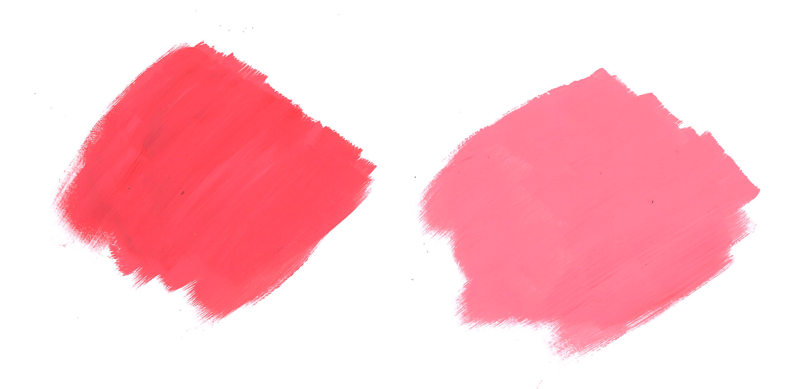

- Painting
- Left swatch consists of 50% white and 50% red
- Right swatch consists of 26% red and 74% white
- One of the first women game designers, inspiring many other women to pursue careers in the tech field -
Game designer for Atari, then ActiVision developing River Raid among many other games -
Game Awards 2017 awarded her with the Industry Icon award -
https://www.gamespot.com/articles/a-look-back-at-trailblazing-game-developer-carol-s/1100-6457258/